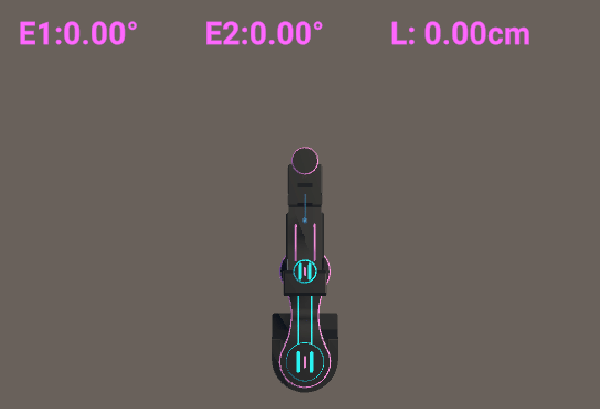

Augmented reality robotics application for Android
An augmented reality application was developed in Unity for Android devices to allow users to visualize and control different types of robots through an interactive interface. The system integrates digital buttons that operate the robots while displaying real-time data from the device. Each animated model, including an omnidirectional car, a quadcopter, and a SCARA robot, was created using SolidWorks designs as a reference to ensure mechanical accuracy and visual consistency.
To provide smooth and responsive interactions, a user-friendly interface and finite state machines were implemented to coordinate the behavior and transitions of the robotic functions. The motion of the omnidirectional car was modeled using its kinematic equations, capturing its behavior in both local and global coordinate frames.
Throughout the development process, version control practices were applied to maintain stable progress and organized iterations, resulting in an educational and interactive platform that integrates mechanical design, control logic, and AR visualization.
To provide smooth and responsive interactions, a user-friendly interface and finite state machines were implemented to coordinate the behavior and transitions of the robotic functions. The motion of the omnidirectional car was modeled using its kinematic equations, capturing its behavior in both local and global coordinate frames.
Throughout the development process, version control practices were applied to maintain stable progress and organized iterations, resulting in an educational and interactive platform that integrates mechanical design, control logic, and AR visualization.


Skills and tools
- Unity development for Android applications
- Augmented reality design and deployment
- SolidWorks modeling
- Animation of robotic systems
- User interface design for interactive control
- Finite state machine for system behavior
- Kinematic simulation of robotic motion
- Coordinate frame transformations
- Integration of mechanical design, control logic, and visualization systems